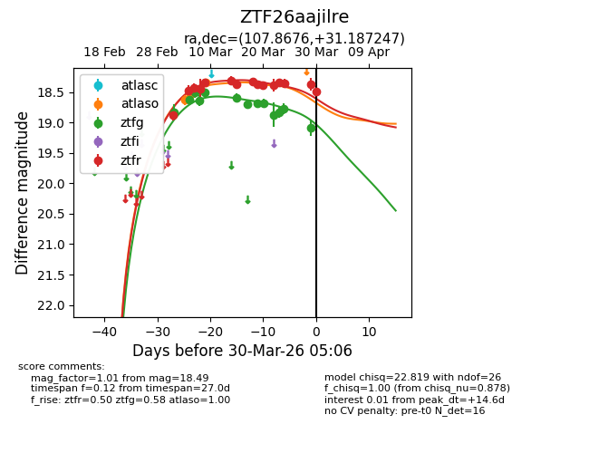
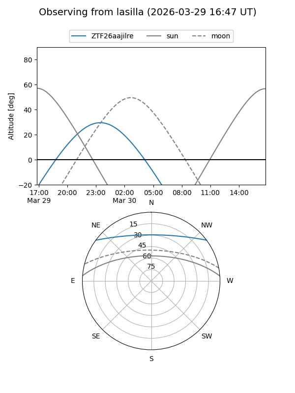
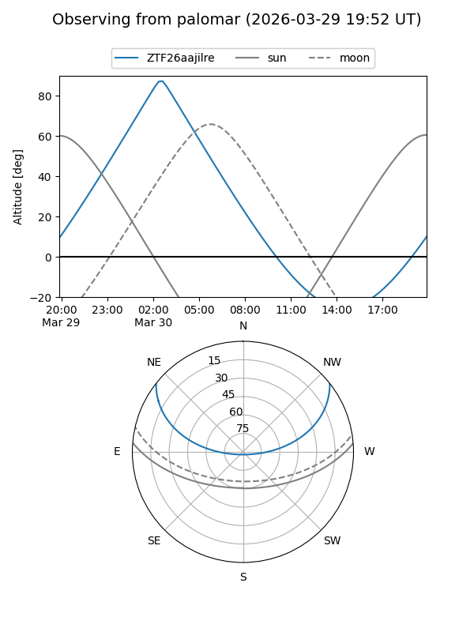
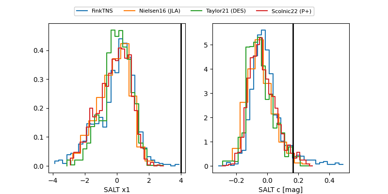

ZTF26aajilre
Target ZTF26aajilre at 2026-03-30 05:09
Aliases and brokers:
FINK: link
Lasair: link
ALeRCE: link
alt names
ZTF26aajilre (ztf,fink_ztf)
Coordinates:
equatorial (ra, dec) = 107.8676,+31.18725
equatorial (HMS+DMS) = 07:11:28.23,+31:11:14.09
galactic (l, b) = (186.3288,+17.61326)
Flags:
Photometry:
last atlaso=18.34, ztfg=19.08, ztfr=18.49
3 atlaso, 13 ztfg, 15 ztfr detections
Lightcurve

Visibility


Additional plots
